Ever wondered how we can sort people into different personality groups? Starting with all the survey answers—a large table of numbers—researchers need to figure out which personality type best fits each person. It is like having a basket of mixed fruits and trying to sort them by kind, but instead of color and shape, we are working with numbers that represent how people answered questions about themselves.
The mathematical challenge is clear: given all the survey answers from many people (data points collected in a matrix $X \in \mathbb{R}^{d \times n}$), we must determine which personality type corresponds to each individual (recover the labels $y \in \{1, \ldots, k\}$). This is naturally formulated through a linear model:
where $F$ represents the latent factors (personality types) and $W$ denotes the factor loadings, capturing how each dimension contributes.
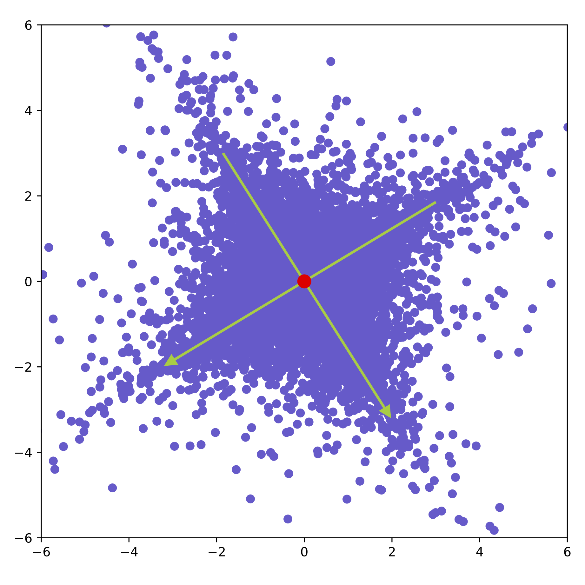
Remarkably, in psychometrics the data often exhibits radial structure. Intuitively, the factorization looks like
and most information can be captured by one factor at a time.
Your first instinct might be to reach for principal component analysis (PCA). But there is a fundamental catch: when the data has radial structure, the covariance matrix ends up looking nearly like a scaled identity:
When the covariance is nearly proportional to the identity, the principal components point in essentially random directions— they provide no information about the true latent structure.
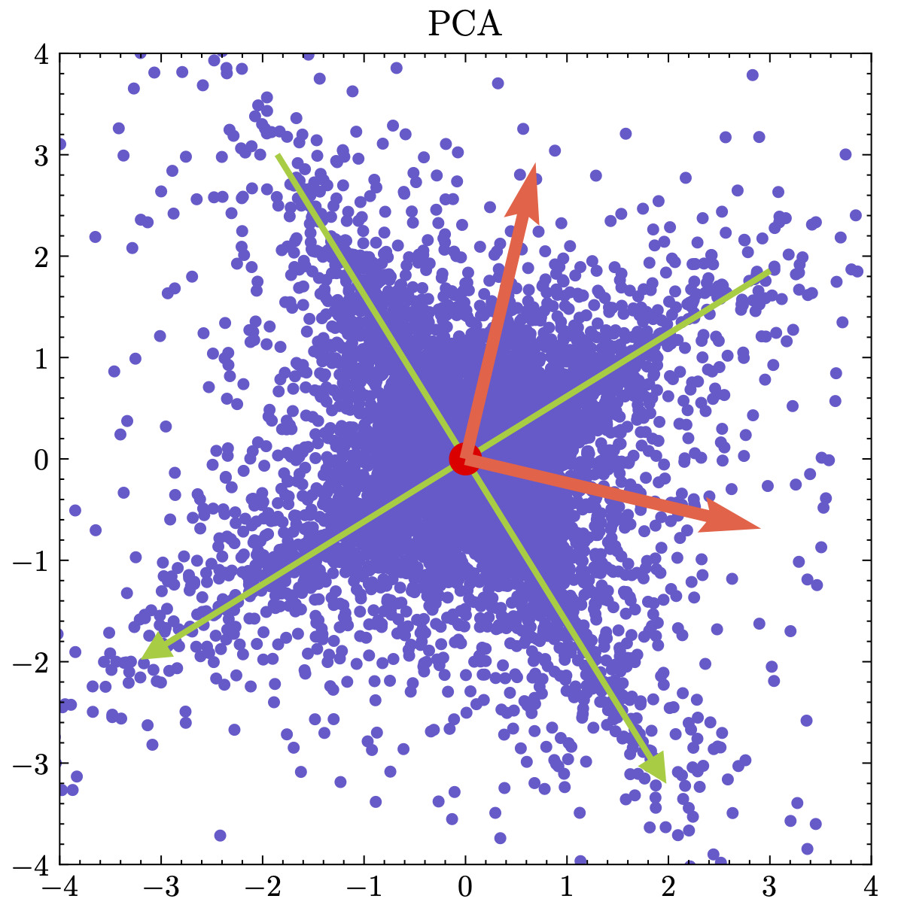
The classical approach to handling radial structure is the Varimax rotation method. Starting from the PCA basis, it applies a rotation chosen to maximize sparsity of the factor loadings. Formally, it solves:
where $\Lambda$ contains the principal components. By fitting to fourth-order moments, Varimax can capture richer structure than second-moment PCA alone.
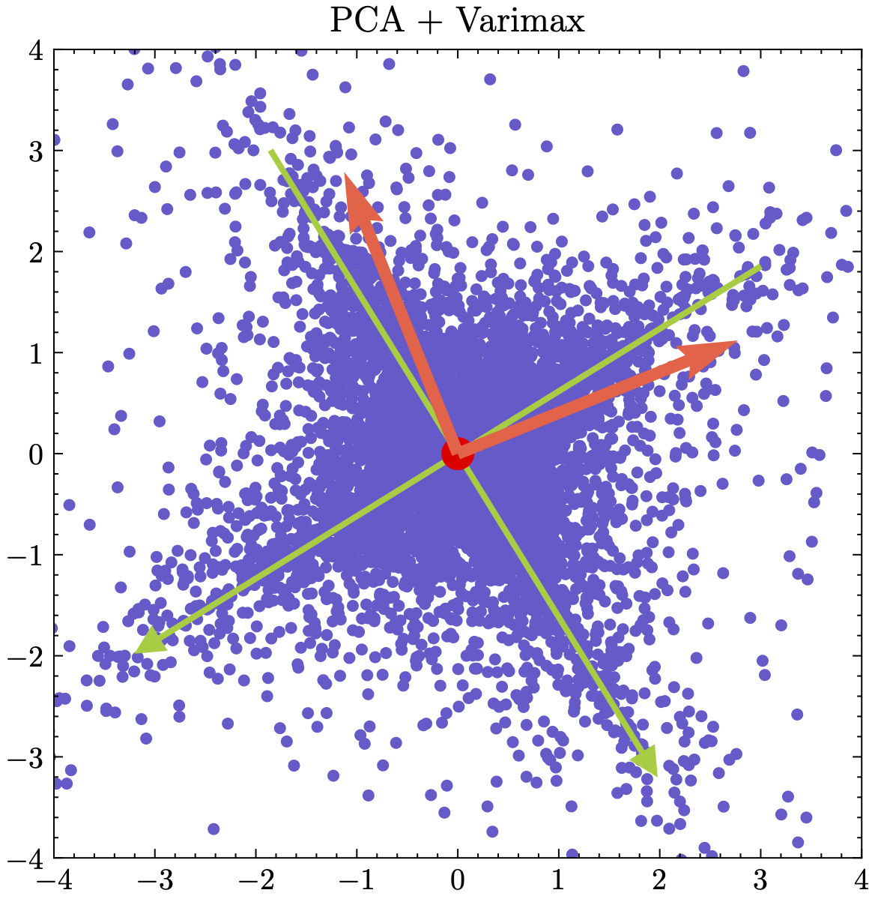
Recent theoretical work by Rohe (2022) shows that Varimax's estimation error is bounded by $O_p(\Delta_n^{-0.24}\log^{3.75} n)$. While theoretically sound under several assumptions, practical applications often reveal its limitations—as shown in the figure.
A more expressive alternative is subspace clustering, which recovers a union of subspaces capturing most of the data's variation. Our problem is a special case: find $k$ one-dimensional subspaces representing the $k$ factors.
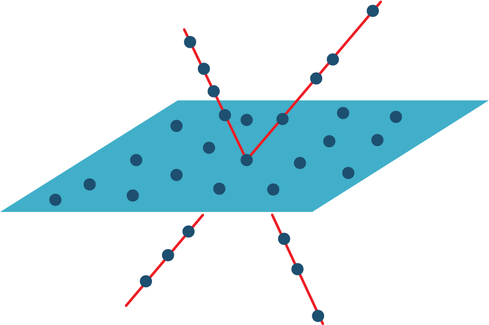
However, even the leading approach—Robust Subspace Clustering (Soltanolkotabi, 2014)—has significant drawbacks. It requires constructing an $n^2$ similarity matrix and then extracting top-$k$ eigenvectors in a second stage, making it computationally prohibitive at scale. Moreover, the recovered subspaces are not required to be orthogonal, so factors may correlate in undesirable ways.
Can we develop a method that is both scalable and statistically robust? Yes—this is the motivation for Geometric Factor Analysis (GFA).
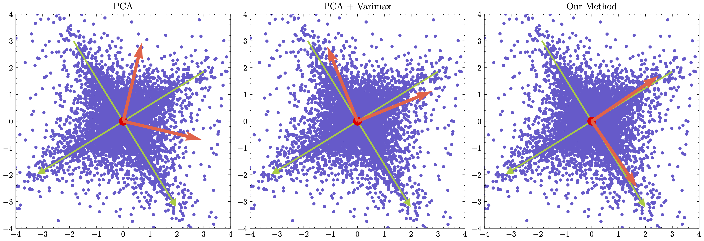
Our key insight is that the data appears to be supported on a cross—a union of $k$ one-dimensional subspaces through the origin. This motivates finding the distribution in that family closest to the observed data under the Wasserstein-2 metric.
Let $\mathscr{P}_\times$ denote the set of probability distributions supported on a cross with $k$ factors. We seek:
While this is initially infinite-dimensional, a key reduction makes it tractable. Using the Stiefel manifold $\mathrm{St}(d,k) := \{U \in \mathbb{R}^{d \times k} : U^\top U = I_{k \times k}\}$, we can reformulate the objective equivalently as:
In practice, with finite samples $x_1, \ldots, x_n$ drawn i.i.d. from $\mu$, this becomes a concrete finite-dimensional Riemannian optimization problem:
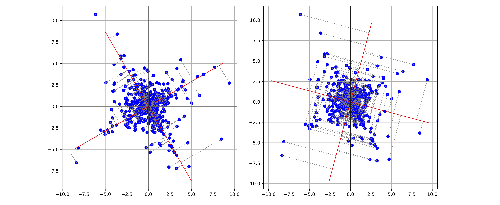
We analyze the loss $\mathscr{E}(U) = W_2^2(\mu, P_U{}_\#\mu)$ under a structural assumption on the data distribution.
Let $\mu \in \mathscr{P}_{2,ac}(\mathbb{R}^d)$ be a convolved measure $\mu = \nu \star \tau\Phi$, where $\nu$ is supported on the cross $\bigcup_{i=1}^{k}\mathrm{span}\{U_i^*\}$ for some $U^* \in \mathrm{St}(d,k)$, and $\Phi$ is isotropic.
Under this assumption:
(i) The loss $\mathscr{E}(U)$ is smooth;
(ii) $U^*$ is a local minimizer of $\mathscr{E}(U)$; and
(iii) in a neighborhood $N \subseteq \mathrm{St}(d,k)$ around $U^*$, $\mathscr{E}(U)$ is geodesically strongly convex.
More precisely, the Riemannian Hessian is bounded above and below in the positive semidefinite order:
The lower bound gives geodesic strong convexity; the upper bound gives $L$-Lipschitz Riemannian gradients. Together they guarantee linear convergence of Riemannian gradient descent in the neighborhood $N$.
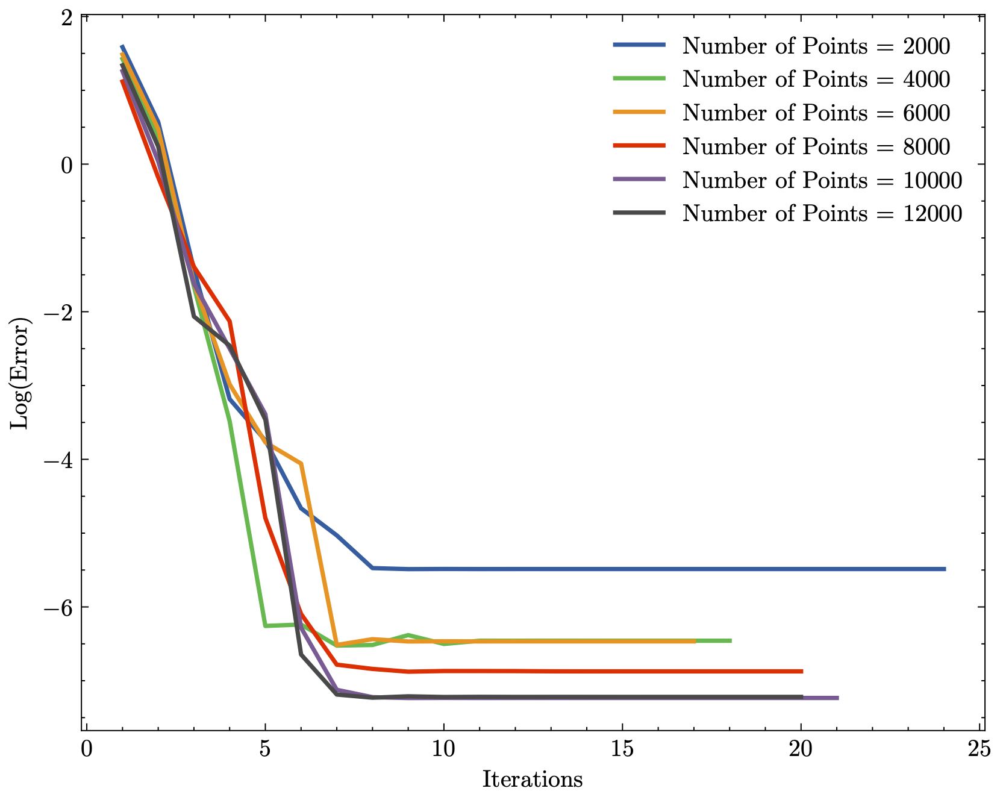
Empirically we observe a rapid initial decay in the loss, consistent with the theoretical linear rate. Crucially, this behavior remains stable as the sample size $n$ grows—the number of iterations required does not increase with data volume.
GFA significantly outperforms Robust Subspace Clustering in computational cost. As the ambient dimension grows, our method incurs only a linear increase in computation time, while the classical approach suffers exponential growth—making GFA the only practical option for high-dimensional problems.
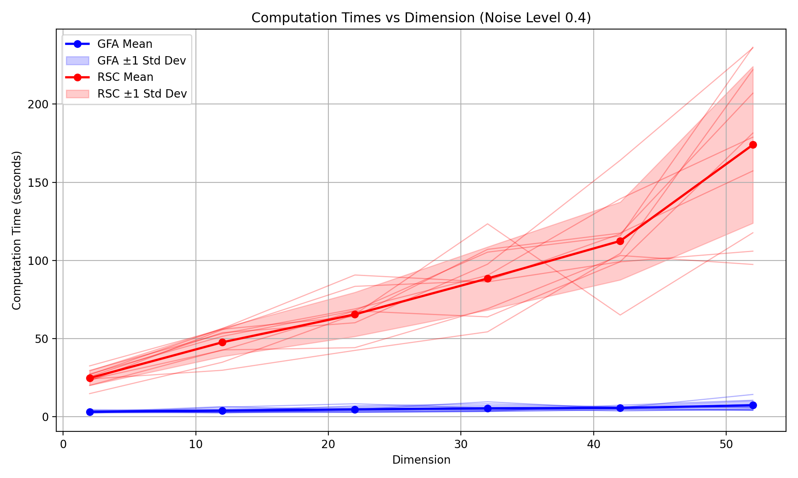
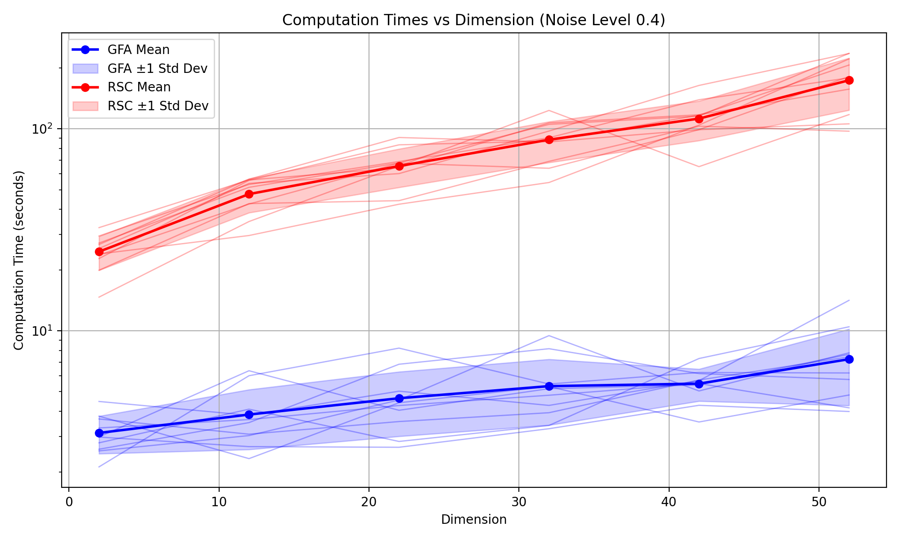
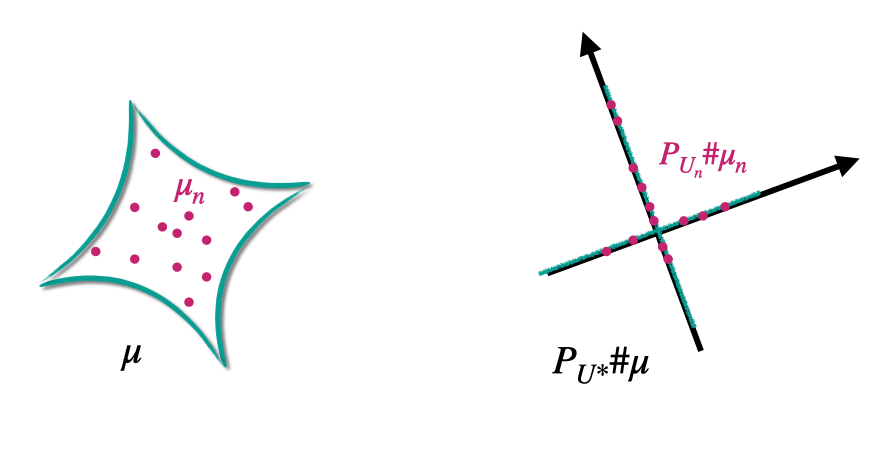
A fundamental question: how can we estimate the Wasserstein distance between $\mu$ and its projection from finite samples? Given $x_1, \ldots, x_n \sim \mu$ i.i.d., we form the empirical measure $\mu_n = \frac{1}{n}\sum_i \delta_{x_i}$ and similarly $\nu_n$ for the projected distribution.
In general, $W_2(\mu_n, \nu_n)$ is not a reliable estimator of $W_2(\mu, \nu)$—for measures absolutely continuous with respect to Lebesgue measure, we have the discouraging bound $W_2(\mu, \mu_n) \gtrsim n^{-1/d}$ almost surely, a manifestation of the curse of dimensionality.
The key question is whether adding structure to our problem lets us escape this curse. The answer is yes.
Under the assumption that there exists $\mu \in \mathscr{P}_2(\mathbb{R}^d)$ and $U^* \in O(d)$ such that $W_2^2(\mu, P_{U^*}{}_\#\mu) \leq \epsilon$ for some fixed $\epsilon > 0$:
$\mathbb{E}(W_2^2(\mu, \mu_n)) \leq 6\epsilon + 3d^2 n^{-1}$
Our goal is to recover $U^*$ by solving $U_n \in \operatorname{argmin}_{U \in O(d)} W_2^2(\mu_n, P_U{}_\#\mu_n)$. Connecting the estimation error $\mathrm{dist}(U_n, U^*)$ to the Wasserstein approximation rate yields the main statistical result:
Under the assumptions of the previous proposition, for any minimizer $U_n$:
$\mathbb{E}(\mathrm{dist}(U_n, U^*)^2) \leq \dfrac{1}{C_\mu}(16\epsilon + 6d^2 n^{-1})$
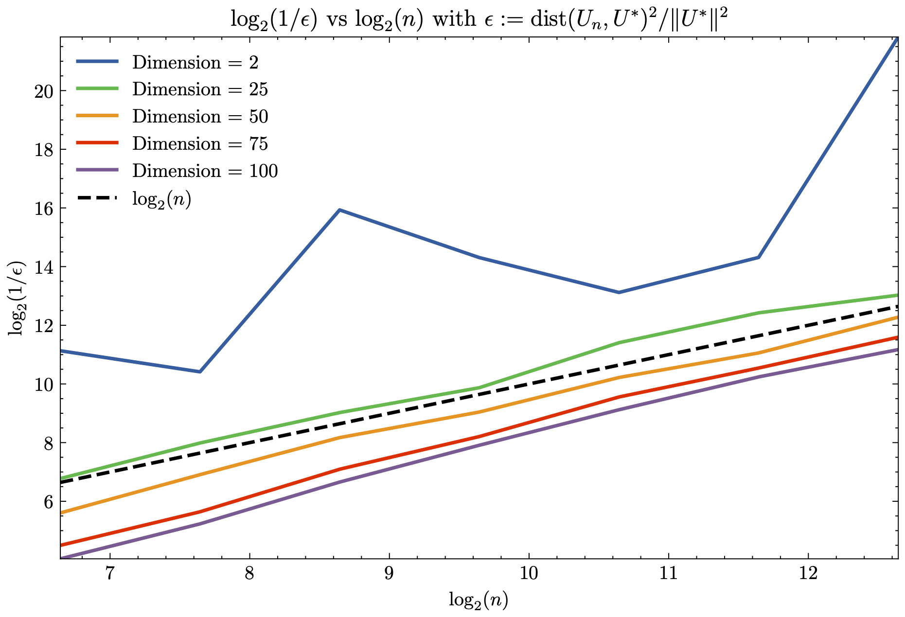
Looking at the normalized error $\delta = \mathrm{dist}^2(U_n, U^*) / \|U^*\|^2$, the rate is $O(d^2 / n)$—polynomial in $d$ rather than exponential. We have escaped the curse of dimensionality.
When studying Earth's climate, researchers track how spatial patterns evolve through time—a problem involving complex multidimensional time series. We focus on sea surface temperature (SST) anomalies, organized as vector fields and studied through their covariance:
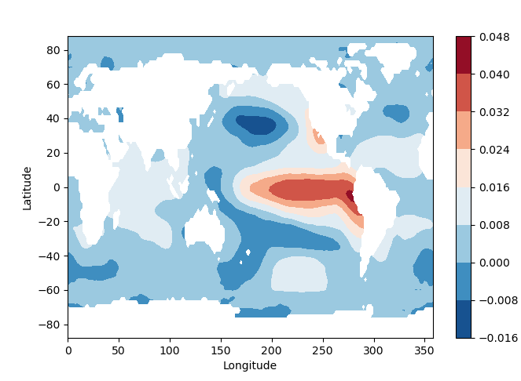
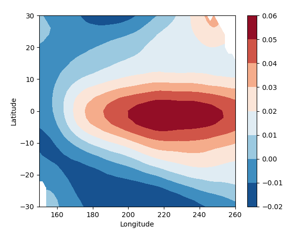
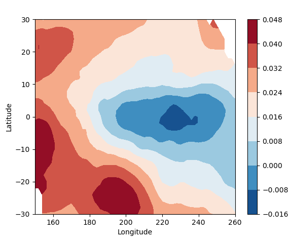
Applied to SST data, GFA cleanly identifies the El Niño warming pattern in the central and eastern Pacific as one factor, while orthogonality forces the second factor to capture the La Niña cooling signature—recovering the two dominant modes of ENSO variability from data alone.
On the Extended Yale-B face dataset, GFA produces more interpretable facial basis elements than either PCA or Varimax.
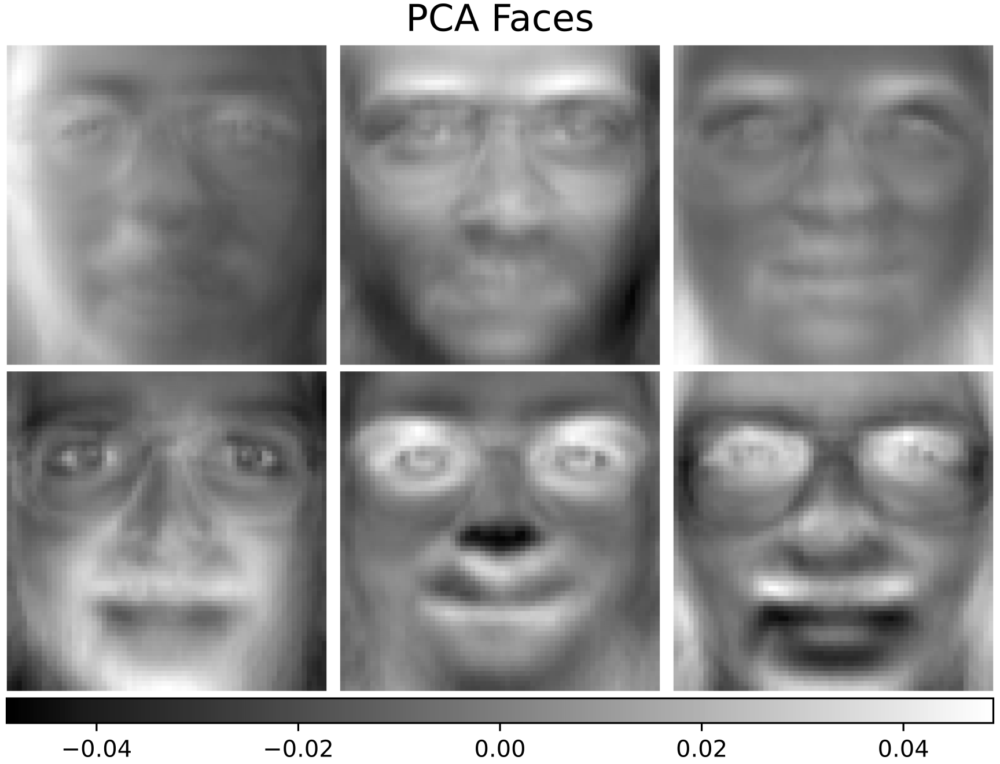
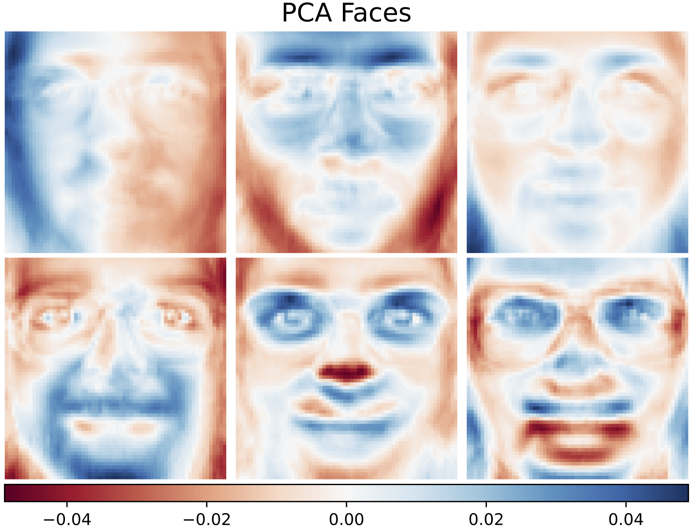
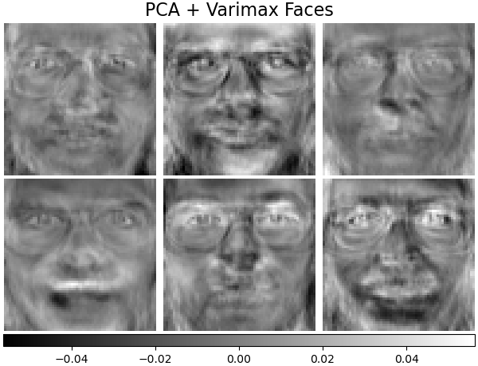
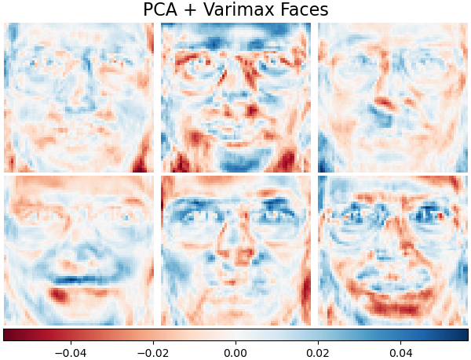
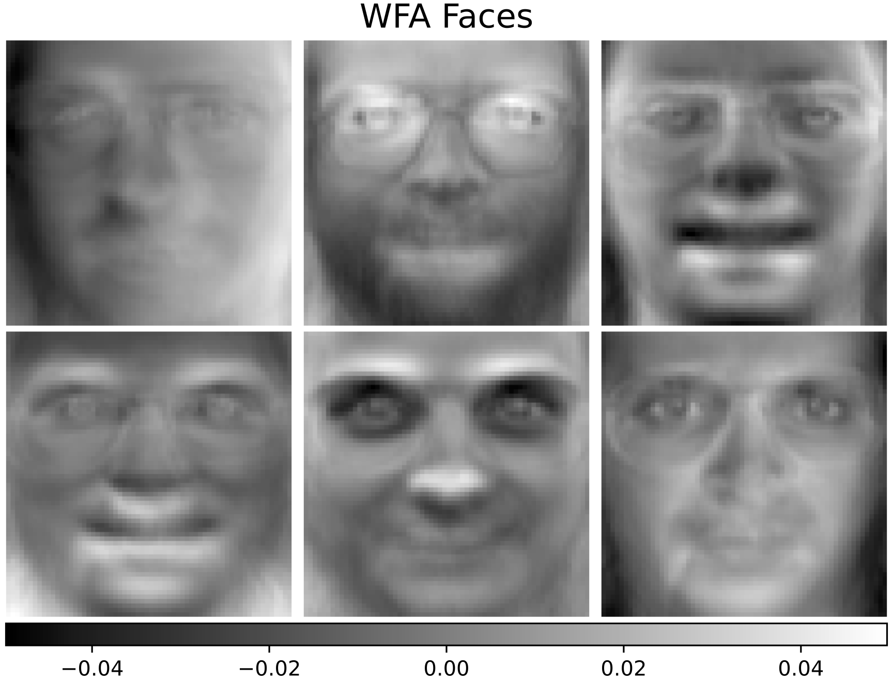
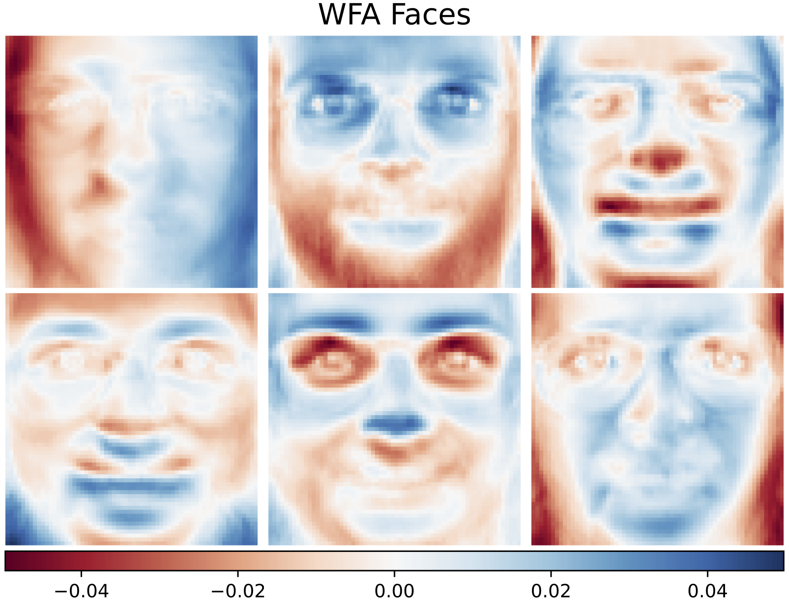
GFA's basis elements correspond more closely to recognizable facial parts, reflecting the radial structure assumption that aligns with how faces vary across illumination and pose.